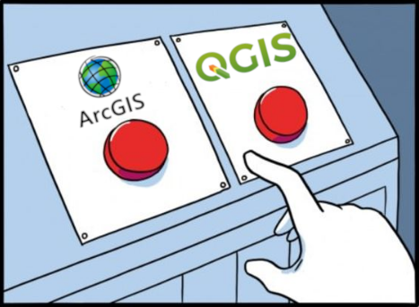
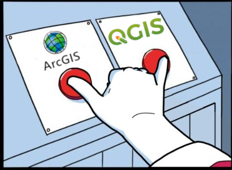
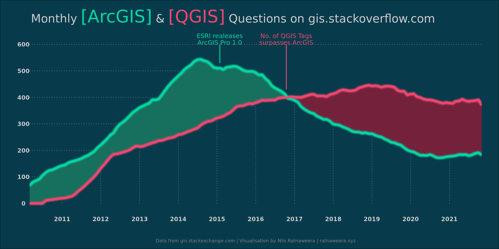
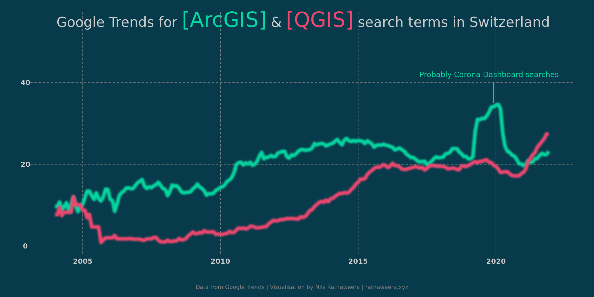
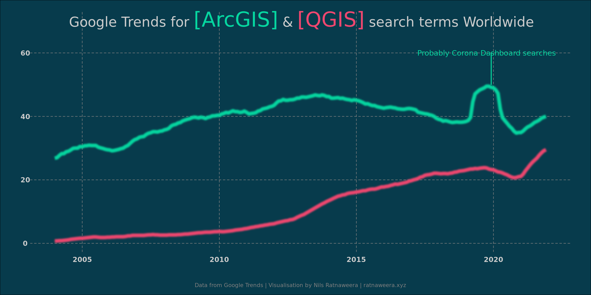

Loading necessary libraries
library(here)
library(tidyverse)
library(lubridate)
#install.packages("ggfx")
library(ggfx)
library(ggtext)
library(ragg)
library(colorspace)Every year we teach well over a hundred Bachelor and Master students basic and advanced concepts surrounding geospatial data analysis and modelling. For each of these courses, we must decide on software with which to implement these concepts. As a publicly funded institution I feel an obligation to use Free and Open Source Software in the classroom. Also, I believe that it’s important to use software that runs on any of the major operating systems Windows, Linux and Mac. In this blogpost I want to make a case for using the Open Source Software QGIS and illustrate this with data gathered to compare the popularity of ArcGIS vs QGIS.
Nils Ratnaweera
November 20, 2022
The opinions expressed in this post are my own and do not necessarily reflect those of my employer.
ArcGIS was considered to be the “industry standard” for a long time. Therefore, our Uni started out using ESRI products when initially developing the first geospatial courses (I’m trying hard to omit the term GIS). Since ESRI has implemented an attractive pricing model for universities and students, there is a low entry barrier to using their products in academia. However, using a commercial product has several downsides: Once students are done with their studies, they will pay the debt for the years of using ArcGIS for free. And I do not mean this strictly monetarily (even though the license fees are considerable): The proprietary nature of the software makes them dependent on ESRI for all updates, support, and fixes. The suite of ESRI products that are exclusively interoperable makes vendor lock-in a big issue, they become less flexible.
On the other hand, using Free and OpenSource Software (FOSS) like QGIS has number of advantages: QGIS is maintained by the community, so bugs are usually discovered and fixed very quickly (if they aren’t one can hire a maintainer to do so). Similarly, new features can be implemented very easily, e.g. by creating a QGIS Plugin. QGIS invites tinkering with the software and peeking behind the scenes. There is a lot that speaks for using FOSS in general, and in an academic setting specifically (see reproducibility). I won’t go further into these reasons here; this blogpost is about something else. Instead, I will refer you to the articles written by Richard Stallman and the Free Software Foundation on https://www.gnu.org/education/

My favorite software for geospatial are R (sf, terra, stars) and Python (geopandas, rasterio, xarray), which we teach on a bachelor and master level. Depending on the audience, these script based tools can be overwhelming and the wrong tool for the job. In the last couple of years, we have started implementing QGIS in new courses or when overhauling existing ones. From the feedback I get from our students who used both software, they prefer working with QGIS. The main reasons being that in their view, QGIS runs more stable and they enjoy the prospect that they can use it after they’ve completed their studies.
ArcGIS vs. QGIS is an ongoing debate on social media. In this discussion, many people make the valid point that you don’t have to choose and can use both software. Another point often made is that you should teach concepts, not software. I fully agree with both statements, however not choosing a specific software is a bit impractical in an education setting. In this blogpost I will therefore continue to focus on the ArcGIS vs. QGIS debate.

The big pro argument for using ArcGIS seems to be ArcGIS is the industry standard, therfore the students need to learn ArcGIS. This seems to be a classical chicken-egg problem: Do we teach software \(X\) because it’s the industry standard, or is software \(X\) the industry standard because it’s what we teach? Be it as it may, I’ve started digging into this premise of this argument to find data to compare the popularity of ArcGIS vs. QGIS. So far, I’ve only found two datasets on this topic (if you have more, please get in touch (rata@zhaw.ch) or write into the comment section below).
I’ve downloaded, processed and visualized this data with R. You can display the code for these steps below, or just look at the results.
The website gis.stackexchange.com is a community within the Stackexchange network, where questions surrounding GIS can be placed. Each question can be attributed with up to 5 tags to categorize the question and make it easier to find. To compare ArcGIS and QGIS, I counted the number of times a variant of the tag ArcGIS was used compared to the number of times a variant of the tag QGIS was used. There are 77 different tags containing ArcGIS, including [arcgis-desktop], [arcgis-10.0], [arcgis-pro] and so on. Since QGIS has less products, there are only 50 different tags containing QGIS, including [qgis], [pyqgis], [qgis-3] and others.
library(tidyverse)
library(xml2)
# https://archive.org/details/stackexchange
xml_posts <- xml2::read_xml("blog/2022-11-30-ArcGIS-vs-QGIS/posts/Posts.xml")
# https://stackoverflow.com/questions/1390568/how-can-i-match-on-an-attribute-that-contains-a-certain-string
get_questions <- function(tags, xml_posts, attrs = c("Id", "Tags", "AnswerCount","AcceptedAnswerId", "PostTypeId", "CreationDate", "ViewCount", "Score")){
imap_dfr(tags, function(tag, group){
children_filter <- xml2::xml_find_all(xml_posts, glue::glue("//row[contains(@Tags, '{tag}')]"))
out_df <- map(attrs, function(attr_i){
xml2::xml_attr(children_filter,attr = attr_i)
}) %>%
set_names(attrs) %>%
do.call(cbind, .) %>%
as_tibble() %>%
mutate(
searchtag = tag,
CreationDate = parse_datetime(CreationDate),
AnswerCount = as.integer(AnswerCount),
AcceptedAnswerId = as.integer(AcceptedAnswerId),
PostTypeId = as.integer(PostTypeId),
group = group
)
})
}
arcgis_qgis <- get_questions(c(arcgis = "arcgis", arcgis = "arcpy", qgis = "qgis"),xml_posts)
write_csv(arcgis_qgis, "blog/2022-11-30-ArcGIS-vs-QGIS/gis.stackexchange-tags.csv")gis_stackexchange_tags <- read_csv(here("blog","2022-11-30-ArcGIS-vs-QGIS", "gis.stackexchange-tags.csv"))
arcgis_pa <- gis_stackexchange_tags |>
mutate(year = year(CreationDate)) |>
filter(year < 2022) |>
group_by(year, group) |>
count()
arcgis_qgis_roll <- gis_stackexchange_tags |>
mutate(month = as.Date(lubridate::round_date(CreationDate, "month"))) |>
group_by(group, month) |>
count() |>
group_by(group) |>
mutate(roll = zoo::rollmean(n, 12, align = "left", fill = NA)) |>
filter(!is.na(roll)) |>
ungroup() |>
complete(group, month, fill = list(n = 0, roll = 0))
arcgis_qgis_wide <- arcgis_qgis_roll |>
group_by(month) |>
summarise(
min = min(roll),
max = max(roll),
diff = max - min,
group = group[which.max(roll)]
)
# https://coolors.co/palette/ef476f-ffd166-06d6a0-118ab2-073b4c
cols <- c(arcgis = "#06d6a0", qgis = "#ef476f")
bgcol <- "#073b4c"
get_first <- function(vec, comp){
comps <- vec >= comp
if(!any(comps)){
length(comps)
}else{
min(which(comps))
}
}
vlines <- tibble(y = seq(0, 600, 100), xend = arcgis_qgis_roll$month[map_int(y, ~get_first(arcgis_qgis_roll$roll, .x))], x = rep(min(arcgis_qgis_roll$month),length(y)))To take out some of the noise, I smoothed the monthly counts by taking the mean over a moving window of 1 year. The visualization technique is heavily inspired by Cedric Scherer’s 2021 #30DayChartChallenge (Day 4).
ggplot(arcgis_qgis_roll, aes(month, roll, color = group)) +
geom_ribbon(
data = arcgis_qgis_wide,
aes(x = month, ymin = min, ymax = max, color = group,
fill = after_scale(darken(desaturate(color, .1), .4, space = "HLS"))),
alpha = .7, inherit.aes = FALSE
) +
with_blur(
geom_line(data = ~filter(., group == "arcgis"),
color = cols[1], size = 2.5),
colour = lighten(cols[1], .1), sigma = 3
) +
with_blur(
geom_line(data = ~filter(., group == "qgis"),
color = cols[2], size = 2.5),
colour = lighten(cols[2], .1), sigma = 3
) +
geom_line(size = 1.5) +
geom_richtext(
aes(x = as.Date("2015-06-01"), y = 700,
label = glue::glue("Monthly <span style='font-family:cinzel;'><b style='color:{cols['arcgis']};font-size:30pt;'>[ArcGIS]</b> & <b style='color:{cols['qgis']};font-size:30pt;'>[QGIS]</b></span> Questions on gis.stackoverflow.com")),
color = "grey80", size = 7, lineheight = 1.5, family = "Work Sans",
stat = "unique", fill = NA, label.color = NA
) +
annotate("text", x = as.Date("2015-01-27"), y = 620,vjust = .5, hjust = .5,
label = "ESRI realeases\nArcGIS Pro 1.0",
family = "Chivo",
colour = cols["arcgis"],
size = 3.8,
lineheight = .9) +
geom_segment(aes(x = as.Date("2015-01-27"), xend = as.Date("2015-01-27"),
y = 530, yend = 600),colour = cols["arcgis"]) +
annotate("text", x = as.Date("2016-10-15"), y = 620,vjust = .5, hjust = .5,
label = "No. of QGIS Tags\nsurpasses ArcGIS",
family = "Chivo",
colour = cols["qgis"],
size = 3.8,
lineheight = .9) +
geom_segment(aes(x = as.Date("2016-10-15"), xend = as.Date("2016-10-15"),
y = 430, yend = 600),colour = cols["qgis"]) +
geom_segment(data = vlines, aes(x = x, xend = xend, y = y, yend = y), inherit.aes = FALSE, color = "grey50", linetype = "13") +
geom_segment(data = filter(arcgis_qgis_wide, month(month) == 1), aes(x = month, xend = month, y = 0, yend = min-10), color = "grey50", linetype = "13") +
scale_x_date(date_breaks = "year", date_labels = "%Y", expand = c(0, 0)) +
scale_y_continuous(breaks = vlines$y) +
scale_color_manual(values = cols) +
labs(caption = "Data from gis.stackexchange.com | Visualisation by Nils Ratnaweera | ratnaweera.xyz") +
theme_void() +
theme(
panel.background = element_rect(fill = "transparent", color = "transparent"),
plot.background = element_rect(fill = bgcol),
axis.text = element_text(family = "Cinzel", color = "grey80",
size = 10, face = "bold", margin = margin(t = 6)),
panel.grid.major.x = element_blank(),
plot.margin = margin(15, 30, 10, 30),
plot.caption = element_text(family = "Work Sans", color = "grey50", size = 8,
hjust = .5, margin = margin(t = 30, b = 0)),
legend.position = "none"
)
The data from gis.stackexchange shows that both ArcGIS and QGIS have grown in popularity since 2011. ArcGIS hit a peak around 2014, 2015 with the release of ArcGIS pro and has since been on a decline. The number of QGIS questions has overtaken those of ArcGIS towards the end of 2016 and QGIS has been dominating the portal ever since.
This data seems to clearly show that QGIS is more popular than ArcGIS. However, an argument can be made that the number of questions regarding a program does not reflect it’s popularity. On the contrary, more questions could be a sign of ambiguity: QGIS might provoke more questions in its use, while the use of ArcGIS is more straightforward. Or maybe, questions regarding ArcGIS are not posted on gis.stackexchange.com, but on a different platform, e.g. community.esri.com.
Therefore, I’ve additionally looked at a different data source, namely Google Trends. Google Trends provides access to a sample of search requests made to Google. This allows us to analyze interest in a particular topic worldwide or for a specific country. Google Trends normalizes search data from 0 to 100 to make comparisons between terms easier. Each data point is divided by the total searches in the selected geographic extent and time range to compare relative popularity.
I downloaded these normalized values for the search terms ArcGIS and QGIS for the maximum time range (2004 to current) in the geographic extent Switzerland. As before, I smoothed the monthly values with a moving window of 1 year.
google_trends_ch <- read_csv(here("blog","2022-11-30-ArcGIS-vs-QGIS", "google-trends-CH.csv"),skip = 1)
google_trends_world <- read_csv(here("blog","2022-11-30-ArcGIS-vs-QGIS", "google-trends-World.csv"),skip = 1)
google_trends_world$`QGIS: (Worldwide)` <- parse_number(google_trends_world$`QGIS: (Worldwide)`)
google_trends <- full_join(google_trends_ch, google_trends_world) |>
pivot_longer(-Month) |>
extract(name, c("Software", "Region"), regex = "(\\w+):\\s\\((\\w+)\\)") |>
mutate(Month = as.POSIXct(paste0(Month,"-1"), format = "%Y-%m-%d"))
google_trends_roll <- google_trends |>
group_by(Software, Region) |>
mutate(roll = zoo::rollmean(value, 12, align = "left", fill = NA)) |>
filter(!is.na(roll)) |>
ungroup() |>
complete(Software, Region, fill = list(value = 0, roll = 0))ggplot(filter(google_trends_roll, Region == "Switzerland"), aes(Month, roll, color = Software)) +
with_blur(
geom_line(data = ~filter(., Software == "ArcGIS"),
color = cols[1], size = 2.5),
colour = lighten(cols[1], .1), sigma = 3
) +
with_blur(
geom_line(data = ~filter(., Software == "QGIS"),
color = cols[2], size = 2.5),
colour = lighten(cols[2], .1), sigma = 3
) +
annotate("text", x = as.POSIXct("2019-10-01"), y = 42,vjust = .5, hjust = .5,
label = "Probably Corona Dashboard searches",
family = "Chivo",
colour = cols["arcgis"],
size = 3.8,
lineheight = .9) +
geom_segment(aes(x = as.POSIXct("2019-12-01"), xend = as.POSIXct("2019-12-01"),
y = 40, yend = 35),colour = cols["arcgis"]) +
theme_void() +
geom_richtext(
aes(x = as.POSIXct("2013-01-01"), y = 55,
label = glue::glue("Google Trends for <span style='font-family:cinzel;'><b style='color:{cols['arcgis']};font-size:30pt;'>[ArcGIS]</b> & <b style='color:{cols['qgis']};font-size:30pt;'>[QGIS]</b></span> search terms in Switzerland")),
color = "grey80", size = 7, lineheight = 1.5, family = "Work Sans",
stat = "unique", fill = NA, label.color = NA
) +
labs(caption = "Data from Google Trends | Visualisation by Nils Ratnaweera | ratnaweera.xyz") +
theme(
panel.background = element_rect(fill = "transparent", color = "transparent"),
plot.background = element_rect(fill = bgcol),
axis.text = element_text(family = "Cinzel", color = "grey80",
size = 10, face = "bold", margin = margin(t = 6)),
panel.grid.major = element_line(linetype = 2,colour = "grey50"),
plot.margin = margin(15, 30, 10, 30),
plot.caption = element_text(family = "Work Sans", color = "grey50", size = 8,
hjust = .5, margin = margin(t = 30, b = 0)),
legend.position = "none"
)
This data range back further than the data from gis.stackexchange.com. But similarly, both terms seem to have gained in popularity since around 2010 and ArcGIS hits a plateau around 2015. QGIS continues to gain in popularity and nearly catches up with the number of ArcGIS queries at the end of 2019. With the beginning of the pandemic, the search term ArcGIS spikes. I’m guessing this has to do with searches related to the ArcGIS Covid dashboard. Interestingly, in the most recent years QGIS seems to have overtaken ArcGIS in the number of times it was searched on Google.
QGIS is evidently very popular in Switzerland. The worldwide data shows very similar trends, but the offset between ArcGIS and QGIS is larger.
ggplot(filter(google_trends_roll, Region == "Worldwide"), aes(Month, roll, color = Software)) +
with_blur(
geom_line(data = ~filter(., Software == "ArcGIS"),
color = cols[1], size = 2.5),
colour = lighten(cols[1], .1), sigma = 3
) +
with_blur(
geom_line(data = ~filter(., Software == "QGIS"),
color = cols[2], size = 2.5),
colour = lighten(cols[2], .1), sigma = 3
) +
annotate("text", x = as.POSIXct("2019-10-01"), y = 60,vjust = .5, hjust = .5,
label = "Probably Corona Dashboard searches",
family = "Chivo",
colour = cols["arcgis"],
size = 3.8,
lineheight = .9) +
geom_segment(aes(x = as.POSIXct("2019-12-01"), xend = as.POSIXct("2019-12-01"),
y = 60, yend = 50),colour = cols["arcgis"]) +
theme_void() +
geom_richtext(
aes(x = as.POSIXct("2013-01-01"), y = 70,
label = glue::glue("Google Trends for <span style='font-family:cinzel;'><b style='color:{cols['arcgis']};font-size:30pt;'>[ArcGIS]</b> & <b style='color:{cols['qgis']};font-size:30pt;'>[QGIS]</b></span> search terms Worldwide")),
color = "grey80", size = 7, lineheight = 1.5, family = "Work Sans",
stat = "unique", fill = NA, label.color = NA
) +
labs(caption = "Data from Google Trends | Visualisation by Nils Ratnaweera | ratnaweera.xyz") +
theme(
panel.background = element_rect(fill = "transparent", color = "transparent"),
plot.background = element_rect(fill = bgcol),
axis.text = element_text(family = "Cinzel", color = "grey80",
size = 10, face = "bold", margin = margin(t = 6)),
panel.grid.major = element_line(linetype = 2,colour = "grey50"),
plot.margin = margin(15, 30, 10, 30),
plot.caption = element_text(family = "Work Sans", color = "grey50", size = 8,
hjust = .5, margin = margin(t = 30, b = 0)),
legend.position = "none"
)
It must be said that neither data source can accurately reflect the real-world popularity of ArcGIS or QGIS. For instance, they do not show many users or companies use the respective software or how much money it generates. Nonetheless, the data has convinced me even more that the time is right to bet on QGIS and exclusively use FOSS in the classroom preferably and whenever possible (edited due to valid feedback by @sfkeller).
I would like to finish off by providing you with a very insightful talk given by David Abernathy at the NC GIS Conference 2017. He talks about his university’s transition from ArcGIS to FOSS and makes several highly interesting points. If you’ve made it up to here, please watch his video!
Edit (2022-12-07)
And lastly, since someone had do do it, a poem of the battle between ArcGIS and QGIS, written by chatGPT from openai.com
In ArcGIS and QGIS, two titans of their trade,
A battle rages, with maps and data as their blade,
Each strives to outdo the other, to claim the victory,
And prove their worth to all who seek the truth in geography.
ArcGIS, with its sleek design and user-friendly interface,
Makes mapping and analysis a breeze, and leaves no trace,
Of confusion or frustration, for its tools are intuitive,
And its functions diverse, enabling users to create maps that are creative.
QGIS, on the other hand, is open-source and free,
A favorite among those who seek to break the mold,
Its capabilities are vast, and its potential immense,
And with its support for numerous plugins, it can be tailored to fit any role.
But as the battle rages on, with each program giving its all,
It becomes clear that there can be only one winner, after all,
And in the end, the victor is not ArcGIS nor QGIS,
But rather the one who uses their tools with skill and expertise.
So let us all embrace these powerful programs,
And use them wisely, to unlock the mysteries of the land,
For in the end, it is not the tool, but the user’s hand,
That shapes the world, and reveals its hidden secrets for all to understand.